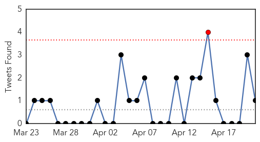
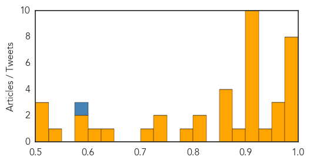
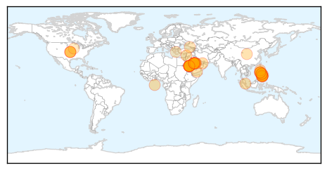

Unknown
30-Day Web Trend
0 alerts, 0 warnings

30-Day Twitter Trend
1 alerts, 0 warnings

Article Locations


Article Confidences
Top Articles:
- 0.996
- Sharp Rise In MERS Cases May Mean The Virus Is Evolving : Shots
- 0.995
- Sharp Rise In MERS Cases May Mean The Virus Is Evolving
- 0.994
- Saudi Arabia sacks health minister as MERS toll rises
- 0.993
- Saudi health minister sacked as MERS toll rises
- 0.990
- Saudi health minister sacked as MERS toll rises
- 0.990
- Health Ministry: Egypt safe from Corona outbreaks
- 0.987
- Health Ministry’s MERS warning
- 0.977
- S. Arabia replaces health minister amid MERS virus fears
- 0.966
- MERS scare: Saudi replaces health minister
- 0.963
- Saudi Arabia replaces health minister amid MERS virus fears
- 0.961
- Saudi Arabia replaces health minister amid MERS fears
- 0.936
- Deadly MERS Disease Strikes Malaysia, Could Go Global
- 0.925
- KBS World Radio
- 0.917
- Youngstown News, Ohio hog farms hit by baby-pig-killing virus
- 0.917
- Chicago Tribune
- 0.917
- Chicago Tribune
- 0.917
- Chicago Tribune
- 0.917
- Chicago Tribune
- 0.917
- Chicago Tribune
- 0.917
- Chicago Tribune
- 0.917
- Chicago Tribune
- 0.917
- Chicago Tribune
- 0.889
- Ohio hog farms are hit by disease that kills baby pigs - Alliance Review
- 0.866
- U.S. Secretary of State Kerry urges Russia to help implement Ukraine agreement
- 0.866
- Syria to hold presidential election on June 3
- 0.866
- Putin changes law to ease citizenship for Russian speakers
- 0.866
- Russia bars some Ukrainian banks from Crimea
- 0.822
- St. Mary’s Hospital declares end to outbreak of gastro illness
- 0.821
- 1 MERS case reported
- 0.799
- New Mers cases in Saudi jump to 49
- 0.750
- UT Health Researchers Investigate New MRSA Superbug Found In Brazil BioNews Texas
- 0.727
- Health : New oral vaccine against rotavirus
- 0.713
- Porcine Epidemic
- 0.632
- Top 10 killer diseases in Hong Kong claim 18pc more lives than a decade ago
- 0.614
- Children With Irritable Bowel Syndrome 4 Times More Likely To Develop Celiac Disease
- 0.599
- Boyne City Commission to discuss fluoride in the water; Gazette investigation reveals county H20 ranges from no fluoride to too much
- 0.587
- Saudi health minister sacked as MERS toll rises
- 0.539
- 60 positive for TB at DOC
- 0.515
- Thousands Of Hospital Kidney Deaths 'Avoidable'
- 0.513
- Chile: some services restored after quake
- 0.503
- News, Weather, Sports, Breaking News
Top Tweets:
- 0.580
- Saudi MoH announces a death of a previously reported MERS case (M 54). Total deaths in SA reach 81 out of 261 cases. Fatality Rate~ 31%.
MERS
30-Day Web Trend
11 alerts, 0 warnings

30-Day Twitter Trend
3 alerts, 0 warnings

Article Locations
Article Confidences

Top Articles:
- 1.000
- Saudi announces spike in cases, UAE and Philippines track down possible carriers
- 1.000
- 5 more Mers cases tested negative in UAE - Emirates 24
- 1.000
- Saudi officials see spike in MERS coronavirus cases
- 1.000
- SARS-Like MERS Virus Spreads Among Health Care Workers
- 0.999
- MERS-CoV Still Prevalent in Saudi Arabia
- 0.999
- DFA, DOH urge OFWs not to panic over MERS-Cov
- 0.998
- 100 Etihad passengers test negative for MERS-CoV
- 0.998
- Two more UAE Mers cases test negative for the virus
- 0.998
- 12 new cases of MERS infections found in UAE
- 0.998
- DoH tracks down possible virus cases
- 0.998
- Gov’t assures public on MERS-CoV: Don’t panic
- 0.998
- DH closely monitors additional overseas MERS case reported to WHO
- 0.997
- S. Arabia announces jump in new cases of deadly MERS virus
- 0.997
- Saudi health minister sacked amid virus deaths
- 0.997
- Suspected carrier of killer virus isolated
- 0.997
- Saudi To Develop MERS Vaccine To Combat Outbreak
- 0.997
- Farsnews
- 0.997
- Saudi health minister sacked amid virus deaths
- 0.996
- Two Mers cases in UAE tested negative; patients to be discharged soon
- 0.993
- Saudi Arabia sacks health chief as MERS cases surge
- 0.991
- Ona: Philippines is MERS-free
- 0.991
- Haj piligrimage to continue despite MERS increase
- 0.990
- Saudi Arabia says ready for Hajj pilgrimage despite rise in MERS cases
- 0.990
- Get medical checkup, 174 passengers told
- 0.989
- Villagers monitored, not quarantined for MERS: Health DG
- 0.987
- Hunt possible virus carriers – Aquino
- 0.986
- Haj to continue despite MERS increase
- 0.986
- Saudi Arabia confirms jump in MERS cases
- 0.983
- Palace: 100 passengers negative for MERS virus
- 0.983
- Prevention is key to containing MERS
- 0.978
- New tests on OFW negative for MERS-CoV
- 0.977
- Greece's First MERS Virus Patient in Critical Condition
- 0.936
- 5 OFWs from Negros quarantined for MERS-CoV tests
- 0.921
- USDA orders farms to report pig virus infections
- 0.917
- Palace appeals to plane passengers
- 0.906
- Negros Oriental
- 0.904
- Policemen ordered to find 174 plane passengers unaccounted for
- 0.878
- For MERS-COV test in Negros Occ Five OFWs under quarantine
- 0.862
- Saudi King dismisses health minister over MERS cases
- 0.857
- Saudi King dismisses health minister over MERS cases
- 0.833
- Farms must report pig virus
- 0.778
- HMT April 21, 2014 newsletter
- 0.775
- Negros Oriental
- 0.762
- Fatal MERS virus carried to Greece from Saudi Arabia
- 0.757
- Schools seek ministries’ advice over coronavirus
- 0.737
- Saudi King dismisses health minister over MERS cases
- 0.734
- Hog Farmers Required To Report Disease Outbreaks
- 0.732
- Porcine Epidemic Diarrhea reporting now required in effort to slow disease
- 0.699
- Saudi dismisses health minister over rise of MERS cases
- 0.592
- Agriculture Secretary Vilsack orders federal response to PEDv
Showing top 50 articles...
Top Tweets:
-
No tweets found for Apr 21, 2014